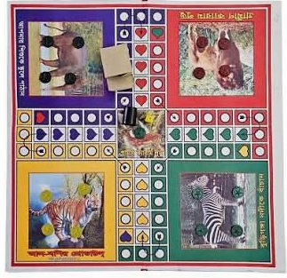
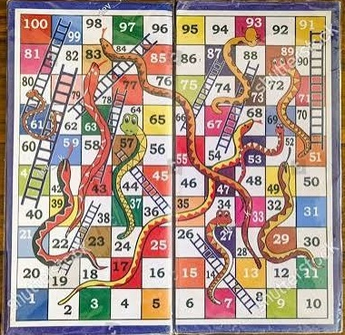

Ludo & Shapludo (লুডু ও সাপলুডু)
The ultimate leisure companion across generations in Bangladesh — a iconic dual-sided board game bridging ancient Indian history, colonial evolution, and modern digital life.
Cultural Significance in Bangladesh
In both urban and rural areas of Bangladesh, Ludo serves as an essential pastime. Children, teenagers, and elders gather around the colorful board on lazy afternoons when the sun is blazing outside or during heavy monsoon rains. It is widely played during summer vacations in village homes, bringing families and visiting guests together.
A classic Bangladeshi Ludo set is uniquely dual-sided: one side features the strategic cross-shaped Ludo track, while the reverse side presents Shapludo (Snake and Ladder), a 100-square grid filled with shortcuts and setbacks.
Historical Lineage: From Pachisi to Ludo King
Ludo traces its origins back to 6th-century ancient India, evolving from the move-based cross-board game Pachisi (or Pasha), which was famously played in imperial courts, including that of Mughal Emperor Akbar.
During British rule in India, the British modified the rules, replaced cowrie shells with a six-sided die, and brought the game to Europe. In 1896, England's Alfred Collier patented this version under the Latin name Ludo ("I play"). It eventually returned to South Asia, becoming an irreplaceable household item.
In 2016, the digital transition peaked with apps like Ludo King, which experienced massive global surges during the COVID-19 pandemic, surpassing 1.5 billion downloads and connecting distant friends through online rooms and voice chats.
Technical Specifications & Rules
| Players Required | 2 to 4 Players (Red, Blue, Green, Yellow bases). |
|---|---|
| Token Setup | 4 tokens per player color (16 total tokens on board). |
| Entry Requirement | A player must roll a Six (6) on the die to move a token out of its home yard onto the starting track. |
| Bonus Rolls | Rolling a 6 grants a bonus turn. Rolling three consecutive 6s forfeits the turn. |
| Capture Rule | Landing on an opponent's single token sends it back to their home yard. Stacking two tokens of the same color creates a block. |
| Shapludo Objective | Roll a One (1) to start with a single token; climb ladders to jump ahead and avoid snake mouths that slide tokens down. |
Visual Archive & Board Artwork

